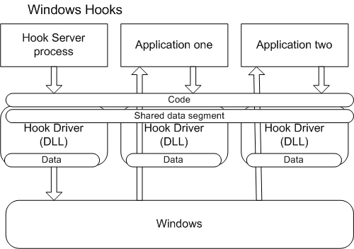
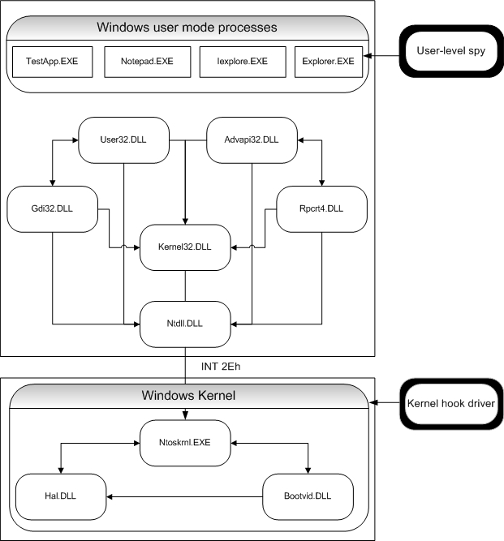
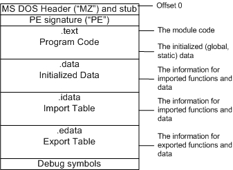
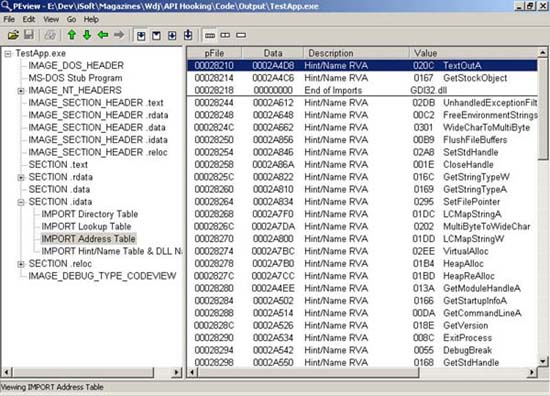
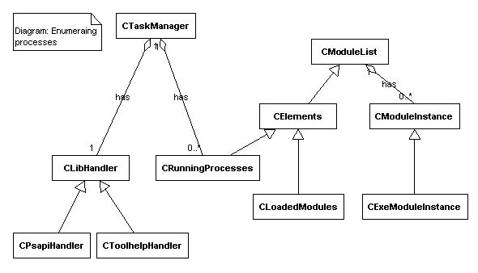
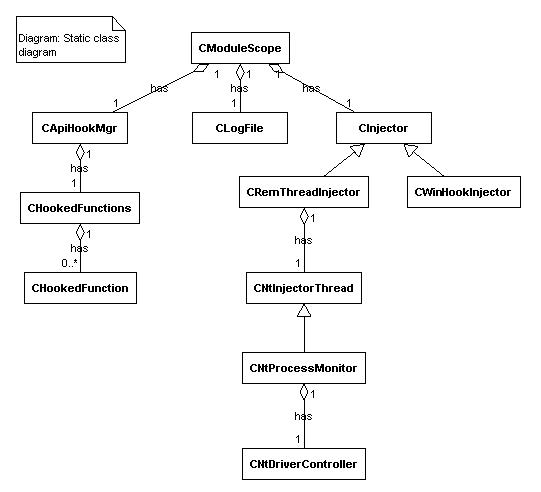

API Hook钩子拦截
简介
Win32 API Hook(钩子、拦截)调用艰难而有趣。钩子机制就是用一种底层技术控制特定代码段的执行，它同时提供了一种直观的方法，很容易就能改变操作系统的行为，而并不需要涉及到代码。这跟一些第三方产品类似。
许多系统都通过拦截技术（spying techniques）利用现有windows应用程序。而拦截的一个重要目的，并不只是为应用程序提供更高级功能，而是为完成调试。
与老式操作系统（如dos，win3.xx）不同，现有操作系统（如WINNT/2K和win9X）使用了成熟的机制来分隔各进程的地址空间。这种架构提供了真正的内存保护，因此任何应用程序都不能破坏属于其它进程的地址空间，更不可能破坏操作系统本身。这使得开发系统相关的钩子（system-aware hooks）变得十分困难。
我写这篇文章就是要探讨一种简单实用的钩子机制，它提供了一个简单的接口，用来拦截不同的API调用。它也示范了一些技巧，可以帮助你开发出自己的api拦截程序（spying system）。同时它还提供了一系列在WIN2K/NT和WIN98/ME（下面简称9X）等windows上拦截WIN32 API 的方法。为了简化我的描述，我没有引入UNICODE的相关内容。但你只需对代码作一些微小改动就能支持UNICODE。
拦截应用程序（Spying of applications）的用途
监视API函数：
有助于控制API调用，也让开发人员在API调用期间跟踪到应用程序特定的“不可见”动作。它有助于开发人员全面掌握程序的细节（comprehensive validation of parameters），也有助于发现潜在问题。例如，有时候，它能便于监视内存管理API引起的资源泄漏。
调试和逆向工程：
除了一般的调试方法，API钩子也是一种值得称道的非常流行的调试方式。许多开发人员用钩子来区分不同组件的执行以及它们之间的关联。因此它也用于获取二进制可执行文件的信息。
深入操作系统内部：
通常开发人员都热衷于深入了解操作系统并扮演着“调试者”的角色。钩子机制也是用于解码未公开的或不为人知的API的有力技术。
扩展已有功能：
可以向外部的windows应用程序嵌入自定义模块、增强原有函数的功能，这需要借助钩子来重定向原有代码的执行序列（让系统在执行原有代码过程中执行用户自定义代码），从而扩展现有模块的功能。例如，许多第三方软件产品并不遵循指定的安全规则而只满足用户特定的使用需求。拦截应用程序允许开发者在原有API执行之前或之后添加属于用户自己的代码。这有助于改变已经编译好的代码的行为。
对拦截系统的功能需求
在实现任何形式的API拦截系统之前，都必须先做一些慎重考虑。首先，你要决定是开发对单个程序的钩子还是全局钩子。例如，假设你只希望拦截一个程序，就不必安装全局钩子了；但如果要监视一切对TerminateProcess() 和WriteProcessMemory()的调用，唯一的办法就是使用全局钩子。选用何种方法都取决于特定的环境和要解决的问题。
API拦截架构的概要设计
通常拦截系统由至少两部分组成——一个钩子服务器（Hook Server）和一个驱动（Driver）。钩子服务器用于在合适时机把驱动注入目标进程，它也可以管理驱动，甚至可以通过注入点获取驱动的工作情况。这样的设计比较粗略，很明显它并未涉及所有可能的实现方式。但这已经能够描述API拦截的框架了。
如果需要实现特定的钩子架构，应该慎重考虑下面几点：
要拦截什么程序
如何向目标进程注入DLL或者说应用何种注入技术
使用何种拦截机制
可以根据自身需求从以下章节找到答案。
注册表钩子
如果要向加载了USER32.DLL的进程注入DLL，只需向如下注册表键写入DLL的名称：
HKEY_LOCAL_MACHINE/Software/Microsoft/Windows NT/CurrentVersion/Windows/AppInit_DLLs
上述表键的值可包含单个或成组用逗号（,）或空格分隔的DLL名称。根据MSDN文档[参考7]，所有包含在上述键值内的DLL，都会被任何运行在当前用户登陆空间（current logon session）的windows应用程序所加载。有趣的是，实际上，这些DLL的加载过程其实是USER32初始化过程的一部分。USER32读取上述键值并为这些DLL的入口调用LoadLibrary()。但这种方法只适用于那些加载了USER32.DLL的程序。另外一种限制是，这种内置的机制只适用于windows2k/nt系统。这是一种安全的DLL注入方法，但有以下缺点：
激活或撤销进程注入必须重启windows
被注入的DLL只能被映射到那些加载了USER32.DLL的进程，所以这种方法至少不能注入控制台程序，因为它们根本不必导入USER32的函数。
另外一方面，注入方不可能控制注入过程。就是说，DLL被注入了所有GUI程序，不管注入方是否有这样的需求。在只需要拦截少量程序的情况下，这样会显得多余。更多信息请参考[参考2]“利用注册表注入DLL”。
全局Windows钩子
另外一种很流行的DLL注入方法来自windows钩子。MSDN指出这种钩子是系统消息处理机制中添加的陷阱。应用程序可以通过安装钩子来监视系统中的消息流（message traffic），并在消息到达特定窗口过程之前处理它们。
根据系统底层要求，这种全局钩子一般在DLL内实现。它的基本原理是，钩子回调过程在被拦截进程的地址空间内被调用。通过调用SetWindowHookEx()并加入合适的参数来安装一个钩子。一旦这种全局钩子安装好，操作系统就会把DLL映射到目标进程的地址空间。此时，DLL内的全局变量就变成局限于单个进程（per-process），不能被各目标进程共享。因此，所有需要共享的变量应该被放置在共享数据段。下图展示了一个例子：钩子服务器注册一个钩子并将其注入到名为“Application one”和“Application two”的进程的地址空间。

每当SetWindowsHookEx()执行，全局钩子就会被注册一次。一切正确时函数将返回该钩子的句柄。在用户自定义的钩子回调过程末尾调用CallNextHookEx()时将要用到上述句柄。成功调用SetWindowsHookEx()后，操作系统就会自动把这个DLL注入到符合要求的所有进程的地址空间，但并不一定是立即注入。下面具体来看过滤WH_GETMESSAGE消息的函数体：
//---------------------------------------------------------------------------
// GetMsgProc
//
// Filter function for the WH_GETMESSAGE - it's just a dummy function
//---------------------------------------------------------------------------
LRESULT CALLBACK GetMsgProc(
int code, // hook code
WPARAM wParam, // removal option
LPARAM lParam // message
)
{
// We must pass the all messages on to CallNextHookEx.
return ::CallNextHookEx(sg_hGetMsgHook, code, wParam, lParam);
} 全局钩子被多个不共享相同地址空间的进程加载。例如，钩子句柄sg_hGetMsgHook会被SetWindowsHookEx()函数获取并作为参数用于CallNextHookEx()，它必须在各进程的地址空间中使用。就是说，该句柄的值必须被客户进程和拦截服务器共享。因此，钩子句柄应该放置在共享数据段中。
以下例子调用了#pragma data_seg()编译预处理语句（使用共享数据段）。在此，我要提醒一下，共享数据段内的变量必须初始化，否则它们将会被放置在默认数据段，同时#pragma data_seg()语句也会失效。
//---------------------------------------------------------------------------
// Shared by all processes variables
//---------------------------------------------------------------------------
#pragma data_seg(".HKT")
HHOOK sg_hGetMsgHook = NULL;
BOOL sg_bHookInstalled = FALSE;
// We get this from the application who calls SetWindowsHookEx()'s wrapper
HWND sg_hwndServer = NULL;
#pragma data_seg()同时应该添加SECTIONS语句到DLL的DEF文件，如下所示：
SECTIONS
.HKT Read Write Shared或使用#pragma comment(linker, "/section:.HKT, rws")
一旦钩子DLL被加载到目标进程的地址空间，要卸载该钩子的话除了拦截服务器调用UnhookWindowHookEx()函数或客户进程退出就没有其他办法了。当拦截服务器调用UnhookWindowHookEx()函数时，操作系统就会扫描一个列表，这个列表包含了所有加载了钩子dll的进程。这时操作系统会（根据列表内进程数量）相应递减钩子DLL的锁定计数，当这个计数变为0，DLL就会从对应进程的地址空间删除。
优点：
这种机制都被WINNT/2K和9X系列的操作系统所支持，后继版本的windows系统也有望支持这种机制。
跟注册表注入机制不同，当拦截服务器不再需要钩子DLL时，可以调用UnhookWindowsHookEx()卸载钩子。
缺点：
windows钩子会明显减低windows的性能，因为它增加了系统处理每个消息时所需开销。
要调试全局钩子很麻烦。但如果你同时运行多于一个vc++实例，就会发现在复杂情况下这样调试反而简单些。
最后一个不容忽视的问题，这种钩子会影响整个系统，在特定环境下（钩子中有bug），需要重启系统来恢复它。
用CreateRemoteThread()函数远程注入DLL
这是我最喜欢的一种注入方式。不幸的是只有NT和2K系统支持。该函数的独特之处在于，它也可以在windows9x上被执行，但只返回NULL而不做任何操作。
远程注入DLL是Jeffrey Ritcher发明的，并记录在他的文章[参考9] "Load Your 32-bit DLL into Another Process's Address Space Using INJLIB"中。
基本原理简单且巧妙。任何进程都可以调用LoadLibrary()来动态加载DLL。问题是当我们缺乏对目标（外部）进程子线程的访问权限时，如何根据自己的意愿强制外部进程调用这个函数？这里要用到CreateRemoteThread()函数了，它可以远程产生线程。这里有个窍门——且看线程体函数的原型，它的指针（类型为LPTHREAD_START_ROUTINE）被作为参数传递给了CreateRemoteThread()：
DWORD WINAPI ThreadProc(LPVOID lpParameter);
下面是LoadLibrary()的原型：
HMODULE WINAPI LoadLibrary(LPCTSTR lpFileName);
它们都有相似之处。它们都使用相同的WINAPI调用约定，它们都接受一个参数，且返回值的长度也是一样的。上面的比较告诉我们，可以把LoadLibrary()作为线程体，这样它就可以在远程线程产生后被执行。接下来看下面的示例代码：
hThread = ::CreateRemoteThread(
hProcessForHooking,
NULL,
0,
pfnLoadLibrary,
"C:HookTool.dll",
0,
NULL); 调用GetProcAddress()可以获取LoadLibrary()的地址。很巧妙的一点是，KERNEL32.DLL总是被映射到进程地址空间的相同位置，因此在每个进程中，LoadLibrary()的地址总是相同的。这就保证了CreateRemoteThread()接收到的参数总是一个有效指针。
我们用DLL的绝对路径作为线程体函数的实参，并转换成LPVOID类型。远程线程运行时，它会把DLL的路径传递给线程体函数（LoadLibrary）。上述就是用远程线程注入dll的全部窍门。
在此需要慎重考虑的是，是否使用CreateRemoteThread()实现远程注入。每当注入程序访问目标进程的虚拟地址空间之前都要调用CreateRemoteThread()，它首先会用OpenProcess()打开目标进程，并传递PROCESS_ALL_ACCESS标志作为实参，这样对目标进程会有最高访问权限。这种情况下，OpenProcess()对于某些低ID(low ID)进程会返回NULL。这是因为，尽管使用合法的进程ID，但注入程序的上下文所具有的权限还不足以访问目标进程。稍思考片刻，你立即会发现这其实很必要。所有被严格限制访问的进程都是操作系统的一部分，因此普通进程不应该访问它们。如果一些存在bug的进程突然试图终止一个操作系统的进程会发生什么事情呢？为了避免操作系统上发生这些问题，应用程序需要具备足够的特权才能调用那些改变操作系统行为的API，要通过OpenProcess()访问操作系统资源（例如smss.exe，winlogon.exe，services.exe等），你必须具有调试特权级（debug privilege）。这是一种非常强大的功能，它提供一种访问操作系统资源的途径，这通常是被限制的。调整进程特权级的过程比较麻烦，可以描述如下：
用目标特权级所需访问许可打开进程记号(processs token)
为了指定特权级名称“SeDebugPrivilege”，必须定位它的本地LUID映射。各个特权级都被冠以名称并可以在平台SDK的winnt.h中找到。
调用AdjustTokenProvileges()函数以调整进程记号（token），这样就使得“SeDebugPrivilege”特权生效。
关闭通过OpenProcessToken()函数获得的进程记号句柄。
关于改变特权级的更多信息可以参考[参考10]“using privilege”。
通过BHO插件注入
有时候我们只想把自定义代码注入Inernet Explorer。幸运的是，微软公司为这样的需求提供了一种简单且有详细文档记录的解决方法——浏览器辅助对象（BHO）。BHO用COM DLL实现，而且一旦正确注册，以后每当IE加载，所有实现了IobjectWithSite接口的COM组件都会随之一起加载。
微软Office插件
与BHO插件类似，如果要向微软office系列应用程序注入用户自定义代码，只需借助微软提供的高级机制来实现office插件，以达到上述目的。很多现成代码展示了如何实现这类插件。
拦截机制
向外部进程注入DLL是拦截系统的关键环节。它提供了控制外部线程活动的极好机会。尽管如此，这样还不足以拦截API调用。
本部分将会对现实世界中的API拦截方法作一个概述，并着眼于每种方法的要点，同时揭示它们各自的优点和缺点。
根据所使用钩子的层次，可以把拦截API的钩子机制分为两种——内核级和用户级。要更好的理解这两种层次，就必须掌握win32子系统API和内部API（Native API）之间的关系。下图解释了不同层次的钩子所在的位置，并说明了在Windows 2k系统上，各个模块的关系以及它们的依赖性。

在实现上主要的不同点在于内核级拦截引擎用内核模式驱动程序实现，而用户级钩子通常以用户模式DLL实现。
1．NT内核级钩子
在内核模式中有几种方法拦截NT系统服务。最流行的方法在Mark Russinovich和Bryce Cogswell的文章[参考3]"Windows NT System-Call Hooking"中有详细描述。其基本思想是，在用户模式下实现监视NT系统调用的拦截机制。这种技术非常强大，它提供了一种灵活的方法，在系统内核处理用户线程请求前将其拦截下来。
你可以在"Undocumented Windows 2000 Secrets" 中找到上述机制的极好设计和实现。在这本书中，Sven Schreiber 解释了如何从零开始建立一个内核级钩子框架[参考5]。
另外一个全面分析和高明的实现来自Prasad Dabak所著的[参考17]"Undocumented Windows NT"。尽管如此，所有上述的拦截策略都超出了本文的讨论范围。
2．Win32用户级钩子
A. 窗口子类
这种方法适用于那些会根据不同窗口过程的实现而具有不同行为的应用程序。要完成上述工作（通过更改窗口过程来执行用户自定义代码），只需对该特定窗口简单调用SetWindowLongPtr()，传递GWLP_WNDPROC和用户自定义窗口过程的指针作为实参即可。一旦建立好用户自定义窗口过程，以后windows每次分发消息到目标窗口时，都会调用用户自定义的窗口过程了。
这种机制的缺点是，子类只在指定进程（当前进程）边界范围内（the boundaries of a specific process）有效。就是说，应用程序不能为其它进程创建的窗口建立窗口子类。
通常，这种方法适用于通过插件拦截应用程序，这样就能够取得要替换窗口过程的窗口的句柄了。
例如，以前我写过一个简单的IE插件（BHO），它通过窗口子类把IE的浮动菜单替换掉。
B. 代理DLL（DLL木马）
拦截API的另一种简单方法是，用具有相同名称、相同导出符号的DLL替换掉应用程序原来的DLL。借助函数导出节（function forwarders）实现这种技术会很容易。从根本上说，函数导出节就是DLL入口处的导出节，它代表本模块与其它DLL的函数调用关系。
你可以简单使用#pragma comment完成以上工作：
#pragma comment(linker, "/export:DoSomething=DllImpl.ActuallyDoSomething")
如果你决定使用这种方法，你应该自行处理库新旧版本之间的兼容性问题。更多信息请参考[参考13a]“Export forwarding”和[参考2]“Function Forwarders”。
C. 代码重写（Code Overwriting）
很多函数拦截的方法都基于代码重写。其中一种通过改变call指令的目标地址实现代码重写。这种方法使用困难，而且容易出错。基本思想是，拦截内存中所有的call指令并以用户提供的地址替换其原来的函数地址。
代码重写的另一种方法实现起来更复杂。简单说，基本思想就是先定位原有API函数地址，然后通过jmp指令改变函数体前几个字节来重定向到用户自定义的API函数去执行。这种方法需要极强技巧性，并涉及到对每个call调用的一系列恢复和拦截操作。要指出的一点是，如果函数处于未被拦截的状态（unhooked mode）并且该函数正被调用，则将不能拦截到对该函数的下一次调用。
上述方法的主要问题是，它跟多线程环境中的线程规则相冲突。
尽管如此，还是有巧妙解决方法的，它解决了一些问题并提供了可以基本实现API拦截的成熟的方法。如果对上述问题有兴趣，可以查看[参考12]的Detours解决方案。
D．通过调试器拦截api调用
另一个替代的方法是在目标函数内插入断点。但这种方法也有些缺点。主要问题是抛出调试异常时（debugging exceptions）会挂起当前应用程序所有子线程的执行。还需要一个调试线程处理这个异常。另一个问题是，当调试过程（debugger）完成时，windows就会把调试器关闭。
E．通过改变导入地址表拦截api调用
这种技术最初由 Matt Pietrek 公布，后来由 Jeffrey Ritcher （[参考2] “通过操作模块的导入节实现API拦截”）和 John Robbins （[参考4]“拦截导入函数”）加以详细描述。这是种强大简单而且容易实现的方法，也满足在winNT/2k和9x上运行拦截系统的大部分需求。这种技术基于windows的可执行文件结构。要理解这种方法的工作过程，必须熟悉PE文件结构，它是通用文件对象格式（COFF）的扩展。Matt Pietrek 在[参考6]“深入PE格式”以及[参考13a/b]“win32PE格式深度透视”中详述了PE格式的相关细节。我将给出PE格式的概述，旨在让读者明白通过操作导入表实现api拦截的思想。
通常来说，一个PE二进制文件的格式是经过组织的，因此它具有代码节（code sections）和数据节（data sections），这与可执行文件在内存中的格式是一致的。PE文件格式在逻辑上由几个节组成，每个节维护特定的数据，并符合操作系统程序加载器的特定要求。
请注意 .idata节，它包含导入地址表的信息。这部分信息对于一个更改IAT拦截api调用的系统相当重要。
符合PE格式的可执行文件都具有下图所述的结构：

应用程序加载器负责把应用程序以及与它相链接的DLL加载到内存，由于这些DLL被加载到的内存地址是不可预料的，因此加载器不能断定各个导入函数的实际地址。加载器必须做一些额外工作来保证应用程序能成功调用每个导入函数。但是对于内存中的每个可执行文件映像，逐个修改它们的每个导入函数会花费大量的处理器时间并导致性能下降。那么，加载器是如何处理这个问题的呢？关键在于，对同一个导入函数的每次调用都指向相同地址，那就是函数代码驻留在内存的位置。实际上对导入函数的调用都是间接调用，即通过一条间接JMP指令并结合IAT实现寻址。这样的好处是加载器不需要扫描整个可执行映像。这种方法看上去很简单，它仅仅是改变IAT内导入函数的地址。这里是一个简单win32程序的PE结构的示例，并借助了[参考8]的PEView 工具。可以看到TestApp导入表包含了两个由GDI32.DLL导出的函数：TextOutA() 和 GetStockObject()。

实际上拦截一个导入函数并没有那么难。总之，一个通过修改IAT来拦截api的拦截系统需要找出IAT中存储的导入函数地址，并用自定义函数的地址覆盖它。这个用户自定义的函数必须和被替换函数的原形一致，这点很重要。下面是替换的步骤：
1、对于目标进程以及它加载的每个DLL，都要通过IAT定位导入节的位置。
2、找到导出目标函数的DLL的IMAGE_IMPORT_DESCRIPTOR 束。实际上，我们通过DLL的名称来找到这个入口。
3、找到含有目标函数地址的IMAGE_THUNK_DATA 束。
4、用自定义函数的地址替换原有地址。
要改变IAT内导入函数的地址，我们必须保证所有对目标函数的调用都被重定向（re-routed）到钩子函数。
还有一点是，需要改写的.idata 节不一定都是可写的，这就要求我们保证 .idata 节可写。可以调用 VirtualProtect() 来实现。
另一点值得注意的是，GetProcAddr() 函数在win9x系统上的行为。当一个程序在非调试模式调用这个API，它会返回目标函数的指针；但如果在调试时调用，它会返回一个与上述指针不同的地址。这是由于在调试的时候，GetProcAddr() 返回的是指向目标函数指针的指针。这个指针指向一条带有目标函数地址的PUSH指令。就是说，在win9x系统上迭代（IMAGE_THUNK_DATA）束时，我们必须检查这个函数指针是否带有PUSH指令（在x86平台上是0x86），并相应地获取函数的实际地址。
Win9x并不支持写时拷贝，因此操作系统会尝试阻止调试器访问2GB边界以上的函数。这就是GetProcAddr() 返回调试指针（debug thunk）而不是实际地址的原因。John Robbins 在[参考4]“拦截导入函数”中讨论了这个问题。
注入拦截DLL的时机
在[参考4]“拦截导入函数”中讨论了这个问题。
注入拦截DLL的时机
在此前已经讨论过，选择的注入机制并不是操作系统本身的固有机制时开发人员所面临的困难。例如，当使用内置的windows钩子注入DLL时，注入机制就不是开发人员所要关心的问题。强制每个符合要求的进程加载DLL[参考18]，这是操作系统需要完成的工作。事实上，windows跟踪所有新建立的进程并强制它们加载钩子DLL。通过注册表来管理dll注入与windows 钩子类似。这些方法的最大的好处是它们本身就是操作系统的一部分。
与上述注入机制不同的是，利用CreateRemoteThread() 的注入方法还要求维护当前运行的进程列表。如果没有及时注入，拦截系统将会丢失一些原本需要拦截的api调用。每当一个新进程开始或关闭时，钩子服务器（Hook Server）都要使用一种巧妙的方法来接收相关的通知，这很重要。其中一种方法，是通过拦截并监视CreateProcess() 系列的API函数的调用（来获得进程开启或关闭的通知）。这时当用户自定义函数被调用，它就可以通过添加Create_SUSPENDED标志调用原来的CreateProcess()。这意味着目标进程的主线程将被挂起，同时钩子服务器将有机会利用手写的机器码指令把DLL注入到目标进程，然后使用ResumeThread() 唤醒目标进程。细节可以参考[参考2]“利用CreateProcess()远程注入代码”。
另一种检测进程执行的方法，是基于驱动程序的。值得关注的是它极高的灵活性。Windows nt/2k 提供了一个由NTOSKRNL导出的名为PsSetCreateProcessNotifyRoutine() 的函数，这个函数允许增加一个回调函数，每当有进程产生或终止时这个回调函数都被调用。更多细节请参见[参考11]和[参考15]。
枚举进程和模块
有时候我们希望利用CreateRemoteThread() API来注入DLL，特别是当拦截系统运行在windows NT/2K上。这种情况下，钩子服务器启动后都会枚举所有活动进程并把DLL注入它们的地址空间。Windows 9x和windows2k 都内置了这种进程枚举机制（Tool Help 库，辅助库）的实现（由Kernel32.dll实现）。另一方面，windowsNT使用PSAPI库达到相同目的。于是，我们需要一种能够令钩子服务器正确运行并动态决定当前可用“帮助库”的途径。因此，拦截系统被设计成可以判断当前操作系统支持何种帮助库，并相应采用合适的API。
我将要展示一个以面向对象为基础的简单框架，它用于在windows9x以上操作系统枚举进程和模块。我的设计允许用户根据自己的需求来扩展框架的功能。框架的实现也是相当简单明了的。
CTaskManager类实现了整个枚举子系统的处理核心，它负责生成一个进程枚举库对象（例如CPsapiHandler 或 CToolhelpHandler）来调用正确的进程信息提供库（例如在9x和2k上分别是psapi和toolHelp32）。CTaskManager也负责产生和维护一个记录当前所有进程列表的容器对象。在CTaskManager实例化之后，拦截系统调用Populate()函数。这个函数强制性地枚举系统中所有进程和dll库并把它们的信息保存在CTaskManager的成员m_pProcesses中。
下面的uml图展示了上述子系统各个类之间的关系：

此处要着重指出的一条是，事实上，windowsNT的Kernel32.dll并没有实现任何的ToolHelp32函数。因此我们必须使用运行时动态链接的方式额外链接这些函数。在windowsNT上如果使用静态链接，那么不论应用程序是否曾经试图调用任何ToolHelp32函数，代码都会运行失败。更多信息请参见我的文章“在windows9x/2k和windowsNT上枚举进程和模块的单一接口”。
建立钩子工具系统（Hook Tool System）的必要条件
目前我已经对拦截过程中用到的各种原理概念作了简短介绍，现在是时候来确定建立一个拦截系统的必要条件，并研究其详细设计了。下面是有关这个系统的一些总结：
提供用户级拦截系统，对通过名字导入的win32 api函数实施拦截
提供一种方法，可以用windows钩子 或远程线程把拦截驱动注入到所有正在运行的进程。拦截系统应该提供ini文件来选择使用何种方式
使用一种基于更改iat的拦截方法
拦截系统的架构是基于面向对象技术的、可重用的、可扩展的和分层的
用一种高效的可扩展的机制来拦截api函数
（整个系统）能够达到预期的性能要求
在拦截驱动和钩子服务器之间使用一种可靠的数据传输机制
实现TextOutA()、TextOutW()以及ExitProcess()的拦截
把拦截过程发生的事件都记录在日志中
拦截系统可以运行在任何基于Intel x86架构的windows9x或以上的操作系统
设计和实现
本部分将讨论钩子架构的关键部分以及它们之间的通讯方式。这样的架构能够拦截任何通过名称导入的api函数。
在概述拦截系统的设计之前，请留意几种注入和拦截方式。
首先，要选择一种能够把dll注入系统所有进程的方式。因此我设计了一个抽象基类，并实现两种注入技术，根据ini文件的设置和操作系统版本（例如windowsNT/2k或windows9x）来选择两种注入方法中的一种。这两种方法分别是全局windows钩子和远程线程。在示例代码中，同时使用了windows钩子机制和远程线程的方式在windowsNT/2k系统上注入dll。可以通过修改一个包含拦截系统所有设置的ini文件来选择注入方式。
另一个重点是选择拦截机制，不必惊奇，我将使用修改iat来作为拦截win32api的最有效方法。为了达到预期的效果，我设计的钩子框架将包含如下组件和文件：
1）TestApp.exe – 一个用于测试的简单win32应用程序，它仅仅使用TextOut()简单的输出了一行文本。它的目的只为了展示api的拦截过程。
2）HookSvr.exe - 控制dll注入和钩子安装的程序。
3）HookTool.dll –用win32 dll方式实现的钩子库
4）HookTool.ini – 配置文件
5）NTProcDrv.sys – 一个小型的用于监视进程产生和撤销的windowsNT/2k内核模式驱动。这个组件是可选的，它仅用于在windowsNT以上系统监视进程。
HookSrv是一个简单的控制程序。它主要用来加载HookTool.dll并激活拦截引擎。加载dll以后，钩子服务器传递一个隐藏窗口的句柄同时调用InstallHook()， HookTool.dll把所有消息都发送到这个窗口上。HookTool.dll实现了拦截驱动且还是拦截系统的核心。它实现了真正的拦截操作并拦截了TextOutA()、TextOutW() 和 ExitProcess()。
尽管文章着眼于windows内部机制因而没必要使用面向对象方法，但我仍使用可重用c++类封装了相关操作。这样可以提供更多的灵活性并使系统易于被扩展。开发者也可以在本工程外的其它工程使用其中独立的类，这对他们有好处。
下面的UML图解释了HookTool dll所实现的各个类之间的关系。

此处请大家留意HookTool.dll的类架构。其中设计各个类的功能是开发过程的重要一环。每个类实现一个特定功能并对外表现为一个独立的逻辑整体。
CmoduleScope是整个系统的基类。它用Singleton模式实现且是线程安全（thread-safe）的。它的构造函数接受3个在共享数据段声明的指针，这些指针将被所有进程共享。基于上述方法，在类中这些变量可以很容易被维护，而不会破坏类封装的原则。
当一个应用程序加载HookTool库时，dll在接收到DLL_PROCESS_ATTACH消息后便产生一个CModuleScope实例。这一步初始化了CmoduleScope的唯一实例。CmoduleScope对象构造的重要一环是产生一个合适的dll注入器对象。而选择合适的注入器是在解释HookTool.ini文件并判断[Scope]节下的UseWindowsHook参数后发生的。当拦截系统运行在windows9x时，这个参数的值将不会被解释，因为windows9x不支持远程线程的注入方式。
上述实例化步骤完成后，接着就会调用ManageModuleEnlistment() 。以下是该函数的一个简化版本：
// Called on DLL_PROCESS_ATTACH DLL notification
BOOL CModuleScope::ManageModuleEnlistment()
{
BOOL bResult = FALSE;
// Check if it is the hook server
if (FALSE == *m_pbHookInstalled)
{
// Set the flag, thus we will know that the server has been installed
*m_pbHookInstalled = TRUE;
// and return success error code
bResult = TRUE;
}
// and any other process should be examined whether it should be
// hooked up by the DLL
else
{
bResult = m_pInjector->IsProcessForHooking(m_szProcessName);
if (bResult)
InitializeHookManagement();
}
return bResult;
} ManageModuleEnlistment() 的实现简单明了，通过检查m_pbHookInstalled指向的变量，它测试自身是否已经被钩子服务器调用过。如果已经被调用，它就只是简单的把sg_bHookInstalled设为TRUE，表明钩子服务器已经启动了。
接着，钩子服务器通过调用钩子dll的导出函数InstallHook() 来激活钩子安装引擎。实际上，该函数只是简单调用了CmoduleScope的InstallHookMethod() 函数。这个函数的作用是强制目标进程加载或卸载HookTool.dll。HookTool.dll提供了两种把自身注入外部进程空间的方法——一是使用Windows钩子另外一种利用CreateRemoteThread()函数。在该系统的架构上，定义了一个抽象类CInjector以及用于注入和卸载dll的纯虚函数。类CWinHookInjector和CremThreadInjector都从CInjector继承。尽管如此，但它们提供了两个纯虚函数InjectModuleIntoAllProcesses()和EjectModuleFromAllProcesses() 的不同实现。
// Activate/Deactivate hooking engine
BOOL CModuleScope::InstallHookMethod(BOOL bActivate, HWND hWndServer)
{
BOOL bResult;
if (bActivate)
{
*m_phwndServer = hWndServer;
bResult = m_pInjector->InjectModuleIntoAllProcesses();
}
else
{
m_pInjector->EjectModuleFromAllProcesses();
*m_phwndServer = NULL;
bResult = TRUE;
}
return bResult;
} CwinHookInjector类用Windows钩子实现注入机制。它通过如下调用安装过滤函数（Filter Function）：正如你在上面看到的，它向系统注册了WM_GETMESSAGE类型的钩子。钩子服务器只调用这个函数一次。SetWindowsHookEx() 的最后一个参数是0，因为在这里GetMsgProc() 是作为一个全局钩子来使用的。当某个窗口即将接收一条特定消息时，回调函数就被调用。这里有趣的是，我们仅为回调函数GetMsgProc() 提供了几近空的（什么也不做的）实现，因为我们不需要监控窗口的消息处理。我们提供该函数的实现仅仅是要用到操作系统提供的注入机制。
// Inject the DLL into all running processes
BOOL CWinHookInjector::InjectModuleIntoAllProcesses()
...{
*sm_pHook = ::SetWindowsHookEx(
WH_GETMESSAGE,
(HOOKPROC)(GetMsgProc),
ModuleFromAddress(GetMsgProc),
0
);
return (NULL != *sm_pHook);
} 调用SetWindowsHookEx()后，操作系统将检查导出GetMsgProc()的dll（例如HookTool.dll）是否已经被映射到GUI进程的地址空间。如果未被加载，Windows将强制该进程映射它。有趣的是，全局钩子的DllMain()函数不应该返回FALSE。这是因为windows会不断验证DllMain()的返回值并加载该dll直到DllMain()返回TRUE。
另一个完全不同的实现来自CRemThreadInjector类。此处的注入机制基于产生远程线程。CRemThreadInjector通过接收进程产生和终止的消息来扩展Windows的进程列表维护机制。也就是产生一个CNtInjectorThread对象来监视进程产生。CntInjectorThread从内核驱动接收进程产生的相关消息。因此每次有进程产生，CNtInjectorThread ::OnCreateProcess() 都被调用，相应的，当进程终止将自动调用CNtInjectorThread ::OnTerminateProcess()。与windows钩子不同的是，每次有进程产生的时候，采用远程线程机制都要手动向新线程注入dll。这需要我们提供一种发送进程产生事件的简便方法。CntDriverController类实现了一些列管理服务和驱动的api。它被设计成加载和卸载内核模式驱动NTProcDrv.sys。后面将会讨论它的实现。
成功向特定进程注入HookTool.dll后，该dll的DllMain()将调用ManageModuleEnlistment()。在前面我已经阐述过了重复调用该函数的原因。它通过CmoduleScope的成员m_pbHookInstalled检查共享变量sg_bHookInstalled。由于钩子服务器在初始化时已经把sg_bHookInstalled置TRUE，于是它便检查当前进程是否需要被拦截，如果需要，钩子服务器将为该进程激活拦截引擎。
在CmoduleScope ::InitializeHookManagement()的实现中，拦截引擎被激活。这个函数用于拦截LoadLibrary()系列的函数和GetProcAddress() 函数。用这种方法，我们可以在进程初始化后监视dll的加载。每当一个新的钩子dll被映射到目标进程，它都要修改进程的导入地址表，因此我们可以保证系统不会丢失对目标函数的任何调用。
在CmoduleScope ::InitializeHookManagement() 末尾，我们对目标函数的钩子函数作了初始化。
由于示例代码拦截了多于一个的用户提供的win32 api函数，因此我们应该对每个被拦截的函数提供独立的钩子函数。就是说，用上述更改iat拦截api的方法，不仅需要把原目标函数在导入表中的地址更改为一个“通用的”钩子函数的地址。拦截系统需要知道某个函数调用指向哪个函数。另外一点很重要的是，钩子函数必须有跟原api函数相同的函数原型，否则堆栈将会崩溃。例如CModuleScope实现了MyTextOutA()、MyTextOutW()和MyExitProcess()3个静态函数。一旦HookTool.dll被加载到目标进程，并且拦截系统被激活，每次对原TextOutA()的调用都回变成对CmoduleScope ::MyTextOutA()的调用。
前面提及的拦截系统是非常灵活高效的。尽管如此，该系统一般只适合于拦截那些名称和原型已知且数量有限的api函数。
如果你需要拦截新的函数，你应该简单声明并实现它的钩子函数，就如同前面实现MyTextOutA/w()和MyExitProcess()一样。然后你应该用前面在InitializeHookManagement()中实现的方法注册被拦截的函数。
拦截和跟踪进程产生对实现那些需要处理外部进程的系统十分有用。获取进程产生过程中的有用信息向来是开发进程监视系统和拦截系统过程中的一个经典问题。Win32 api提供了一系列的库（[参考16]PSAPI和ToolHelp库）用来枚举当前系统中运行的进程。尽管它们功能很强大，却没有提供接收进程产生/撤销事件的方法。幸运的是，windowsNT/2K提供了一系列api，被详细记录在windowsDDK文档的“进程结构规则（Process Structure Routines）”下，并被NTOSKRNL导出。其中之一的PsSetCreateProcessNotifyRoutine()允许注册一个全局回调函数，该函数在进程产生、退出、终止时被操作系统调用。通过写一个NT内核模式驱动和win32用户模式控制程序，就可以简单的利用上述函数来实现进程监视。该驱动的作用是检测进程产生并把相关事件通知控制程序。示例代码中的windows进程监视器NTProcDrv提供了在基于NT内核的操作系统上监视进程的最基本功能。更多细节请参见文章[参考11]和[参考15]。相关代码在NTProcDrv.c中。由于该驱动的加载和释放是动态的，因此当前登录用户必须拥有管理员权限。否则驱动安装将会失败同时进程监视也会出错。解决办法是用管理员权限手动安装驱动，或使用windows2k提供的“作为其他用户运行（run as different user）”选项来运行HookSrv.exe。
最后要注意的一点是，可以通过简单修改ini文件（HookTool..ini）中的相关设置来选用上述所有的工具。这个文件决定了使用windows钩子（在win9x和nt/2k系统上）还是远程线程（仅在windowsnt/2k上）来做dll注入。也可以在该文件里面指定要监视的进程和不被监视的进程。如果需要查看被拦截进程的详细活动，打开[Trace]节下面的Enabled选项就可以记录下拦截系统的所有活动。通过调用由ClogFile类导出的方法，这个选项能让用户看到发生错误的内容。实际上，ClogFile提供了线程安全的实现，而且访问共享资源的同步问题也不需要操心了（日志文件）。更多信息请参看ClogFile类的实现以及HookTool.ini的内容。
示例源代码
编译本工程需要vc++6 sp4和Platform SDK。在windowsNT平台上需要提供PSAPI.DLL以运行CtaskManager的实现。在运行示例代码之前必须确保已经被设置好了HookTool.ini文件。对于那些要扩展NTProcDrv代码和对本工程底层内容感兴趣的开发人员，他们应该安装windowsDDK。
延伸内容
出于简化问题的目的，在本文中我忽略了一些内容：
1）监视内部的api（Native API）调用
2）windows9x系统上监视进程产生的驱动
3）支持UNICODE，但你还是可以通过拦截UNICODE导入函数来达到相同目的。
总结
到目前为止，本文尚未对拦截任意api的问题给出完整的指南，毫无疑问，本文遗漏了一些细节。尽管如此，我仍在这少数的有限篇幅中给出了足够重要的信息，也许对那些在win32用户模式做api拦截的开发人员有帮助。
参见
参考文章
[1] "Windows 95 System Programming Secrets", Matt Pietrek
[2] "Programming Application for MS Windows" , Jeffrey Richter
[3] "Windows NT System-Call Hooking" , Mark Russinovich and Bryce Cogswell, Dr.Dobb's Journal January 1997
[4] "Debugging applications" , John Robbins
[5] "Undocumented Windows 2000 Secrets" , Sven Schreiber
[6] "Peering Inside the PE: A Tour of the Win32 Portable Executable File Format" by Matt Pietrek, March 1994
[7] MSDN Knowledge base Q197571
[8] PEview Version 0.67 , Wayne J. Radburn
[9] "Load Your 32-bit DLL into Another Process's Address Space Using INJLIB" MSJ May 1994
[10] "Programming Windows Security" , Keith Brown
[11] "Detecting Windows NT/2K process execution" Ivo Ivanov, 2002
[12] "Detours" Galen Hunt and Doug Brubacher
[13a] "An In-Depth Look into the Win32 PE file format" , part 1, Matt Pietrek, MSJ February 2002
[13b] "An In-Depth Look into the Win32 PE file format" , part 2, Matt Pietrek, MSJ March 2002
[14] "Inside MS Windows 2000 Third Edition" , David Solomon and Mark Russinovich
[15] "Nerditorium", James Finnegan, MSJ January 1999
[16] "Single interface for enumerating processes and modules under NT and Win9x/2K." , Ivo Ivanov, 2001
[17] "Undocumented Windows NT" , Prasad Dabak, Sandeep Phadke and Milind Borate
[